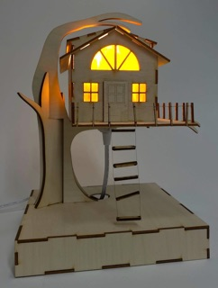

Welcome to MechEMake
This is where innovation meets craftsmanship! We're not just a business; we're a collective of passionate mechanical engineering students who're trying to figure out what to do with all the random things we make.
Our Story:
MechEMake was born in the bustling workshop of the Nolop Maker Space. A bunch of Mechanical Engineering students (or MechEs for short) gathered together to try to answer a question: What should we do with all of the random crap we make? While MechEs love building things but often they don't know what to do with what they've made. That's where MechE make comes in. For a small fee we can build custom gadgets, gizmos, and home decor for you!
What We Offer:

At MechEMake, we offer a range of one-of-a-kind, bespoke items crafted with precision and passion. From personalized gadgets to unique home decor, our MechEs are at your service, ready to turn your ideas into tangible masterpieces. We charge by the hour, ensuring that every creation receives the attention to detail it deserves.
We understand the importance of craftsmanship and quality. That's why we go above and beyond to source the finest materials and employ advanced manufacturing techniques. Whether it's the precision engineering of a mechanical gadget or the intricate detailing of a decorative piece, you can trust MechEMake to deliver exceptional quality every time.
Our MechEs, have turned the Nolop Maker Space into a dynamic hub of creativity. They dedicate their free time to the art of crafting, bringing to life items that seamlessly blend functionality with aesthetic appeal. The result? A collection of items that not only serve a purpose but also tell a story of the inventive minds behind their creation.